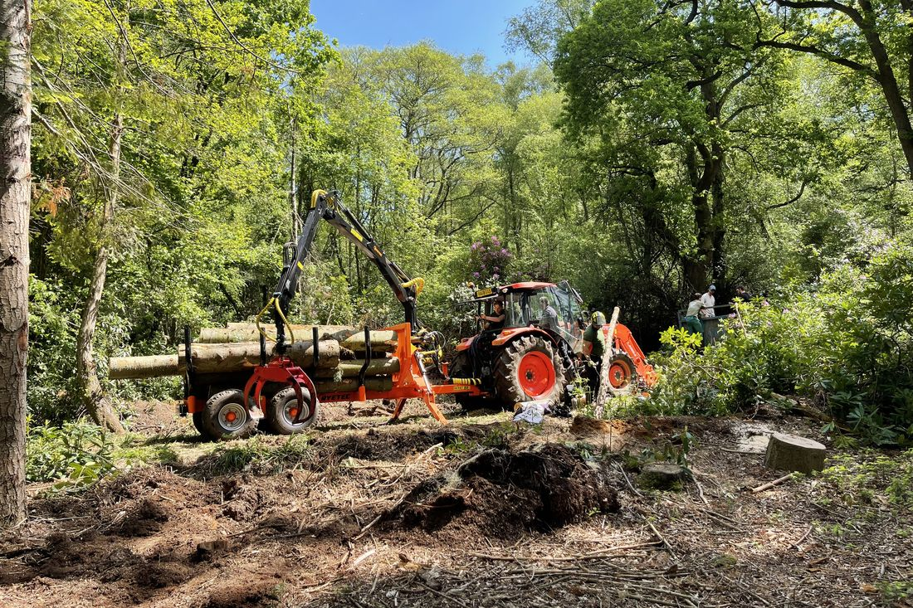

Woodland management across West Sussex
Thinning, coppicing, ash dieback, invasive species, clearing and selective felling from a qualified local team based in Horsham.
Looking after your woodland
Woodland is a big part of the West Sussex landscape, from the ancient woods of the High Weald to the beech woods of the South Downs. A well-managed wood is healthier, safer and better for wildlife, and it is more enjoyable to spend time in.
Whether you own a small copse behind your house or a larger wood, we provide woodland management in Horsham and across West Sussex, with a plan to suit you and the wood. Every wood is different, so we start with a site visit and a free, no-obligation quote.
Jump to:

Woodland thinning
Thinning means removing some of the trees in a crowded wood so the ones left have room to grow. In an overcrowded wood the trees grow tall and spindly, the canopy closes over, and very little can grow on the woodland floor.
By opening up the canopy we let light reach the ground, which helps native flowers, shrubs and young trees to establish and gives wildlife more to live in. The remaining trees grow stronger and healthier too. We choose which trees to take out, usually the weakest, the poorly shaped, the diseased and the ones competing with a better neighbour, and we thin gradually rather than clearing heavily.
Ash dieback management and removal
Ash dieback is a fungal disease that has spread through ash trees across the UK, including woods throughout West Sussex. Affected trees show thinning crowns, dead twigs and branches, early leaf loss and dark patches or lesions on the bark.
The disease weakens the tree, and the wood can become brittle, so branches and whole trees can fail with little warning. That matters most next to roads, footpaths, buildings, fences and gardens, and as the landowner you are responsible for trees that could harm people or property.
We inspect ash trees on your land and advise which ones need to come down now, which can be reduced or kept an eye on, and which are showing some tolerance and are worth keeping. Where felling is needed, we assess each tree carefully and choose the safest way to take it down. We can also talk through replanting with suitable native species. Read our full guide to ash dieback in West Sussex.
Coppicing
Coppicing is the traditional way of managing woodland by cutting broadleaf trees back close to the ground so they regrow as a cluster of new stems. The cycle is then repeated every few years or every couple of decades, depending on the species. It has shaped Sussex woodland for centuries, especially hazel and sweet chestnut coppice in the Weald.
A coppiced wood is a patchwork of bright clearings and older growth, which suits woodland flowers, butterflies, nesting birds and dormice. It also gives a regular crop of poles for fencing, bean sticks and firewood. We cut in the winter while the trees are dormant and work in sections, so there is always a range of habitat. If your coppice has been left to grow on for decades, we can help bring it back into rotation.
Woodland clearing
Left alone, woods can become choked with bramble, scrub, fallen branches and invasive species such as rhododendron and laurel, which shade out native plants and make the wood hard to use or enjoy.
We clear overgrown scrub and bramble, remove fallen and storm-damaged trees, cut back invasive species and reopen paths, rides and boundaries. Cleared material can be chipped, stacked as wildlife habitat or taken away, whichever suits you. Clearing is also the first step before replanting, fencing or putting a wood back into use.
Wherever we can, we plan clearance outside the main bird nesting season, roughly March to August, and we take care around protected wildlife.
Forestry mulching
Forestry mulching clears overgrown land by shredding scrub, brash, brambles and small trees into mulch on the spot. A machine with a rotating mulching head does the work, so there is no need to cut, stack, burn or cart everything away.
It is a quick way to deal with dense, overgrown ground, and the layer of mulch left behind helps protect the soil and hold back regrowth. The machine works from the surface and the stumps stay in the ground, so there is less disturbance than digging everything out.
Mulching suits overgrown scrub and bramble, neglected woodland edges, rides and paths, field margins and land being brought back into use. It is not right everywhere: larger trees are normally felled first, and access, slopes, soft ground and underground services all need checking on the site visit.
A deep layer of mulch can smother ground flora and seedlings, so how much is left on the ground depends on the site. Mulching on its own will not stop rhododendron or laurel, which regrow from the stumps, so it needs following up (see invasive species below). As with any clearance, we plan around nesting birds and other wildlife.
Invasive species: rhododendron and laurel
Rhododendron ponticum and cherry laurel are evergreen shrubs brought to Britain as garden plants. Both have escaped into the wild, and across southern England they are among the most damaging invasive plants in woodland.
They shade out the flora
Dense evergreen growth blocks the light all year round. Bluebells, wood anemones and other woodland flowers disappear, and young native trees cannot grow to replace the old ones.
They change the soil
The thick, leathery leaf litter breaks down slowly and can change the soil, adding acidity and making it harder for native seedlings and woodland plants to get going.
They support less wildlife
Native insects, birds and mammals rely on a mix of native plants for food and shelter, so a wood taken over by one species supports far less wildlife.
They can carry tree disease
Rhododendron can carry Phytophthora ramorum and Phytophthora kernoviae, diseases that also damage trees such as beech and oak.
Both plants regrow vigorously from cut stumps, and rhododendron seed can stay in the soil for several years, so clearing them is not a one-visit job. We cut and remove the growth, deal with the stumps and roots, and plan follow-up checks for regrowth so the wood can recover. If rhododendron is spreading in from neighbouring land, it is worth talking to your neighbour, because new plants can seed back in.
Rhododendron ponticum is listed on Schedule 9 of the Wildlife and Countryside Act 1981, which makes it an offence to plant it or cause it to grow in the wild. Cuttings and waste need handling carefully so they cannot spread, and should not go in a garden green waste collection.
Once an area is clear, we can replant it with native trees and shrubs. See our tree and hedge planting.
Selective felling
Selective felling means taking out particular trees for a reason, rather than clearing a whole area. That might be a dead, dying or diseased tree, a tree leaning towards a building or path, a tree crowding out a better one, or making space for new growth. It keeps the character of the wood while dealing with the trees that cause problems.
We agree with you which trees are coming out before we start, and fell them in a controlled way, whole or in sections depending on what is around them.
Larger amounts of timber may need a felling licence from the Forestry Commission. In England you can normally fell up to 5 cubic metres in a calendar quarter without one, as long as no more than 2 cubic metres are sold, and trees in private gardens are generally exempt. If you are unsure, we will point you in the right direction before any work begins.
Before we start
Felling licences, Tree Preservation Orders, conservation areas, ancient woodland and protected wildlife can all affect what you are allowed to do and when. We will check what applies to your wood before any work starts, so you are not caught out.
Woodland management questions
Do I need a felling licence in West Sussex?
In England the Forestry Commission regulates tree felling. You can normally fell up to 5 cubic metres of growing trees in a calendar quarter without a licence, as long as no more than 2 cubic metres are sold, and trees in private gardens are generally exempt. Beyond that you will usually need a licence. Tree Preservation Orders and conservation area rules, which are handled by your local council, can apply as well. If you are unsure, ask us before any work begins.
Should I fell all the ash trees on my land?
Not necessarily. Trees near roads, paths and buildings are the priority, because diseased ash can become brittle. Elsewhere, some ash can be kept and monitored, and a few trees show tolerance to the disease. We will walk the site with you and advise tree by tree.
When is the best time to do woodland work?
Most thinning, coppicing and felling is best done in autumn and winter, when the trees are dormant and birds are not nesting. Some clearing and safety work can happen at other times of year, with checks for nesting birds and other wildlife.
How much does woodland management cost?
It depends on the size of the wood, how easy it is to get to, the type of work and how much usable timber comes out. We visit, talk through what you want to achieve and give you a free quote. Some woodland work can qualify for grant funding, so it is worth checking with the Forestry Commission before you start.
What is forestry mulching?
It means shredding scrub and small trees into mulch on site with a machine that has a rotating head, instead of cutting everything up and carting it away. It works well on dense, overgrown ground, and the mulch is left to protect the soil.
What happens to the wood and brash afterwards?
That is up to you. We can chip it, stack it as wildlife habitat, cut it into logs or take it away.
Why remove rhododendron and laurel from woodland?
They shade out woodland flowers and stop young native trees growing, they can change the soil, they support far less wildlife, and rhododendron can carry Phytophthora diseases that harm trees such as beech and oak. Removing them lets the wood recover.
Will rhododendron and laurel grow back?
They can, because both regrow strongly from cut stumps and rhododendron seed can stay in the soil for several years. That is why clearance needs the stumps and roots dealing with, plus follow-up checks for regrowth.
Is rhododendron illegal?
Rhododendron ponticum is listed on Schedule 9 of the Wildlife and Countryside Act 1981, which makes it an offence to plant it or cause it to grow in the wild. If you are unsure what applies to your land, ask us or your local council.
Which areas do you cover?
We are based in Mannings Heath near Horsham and cover woodland across West Sussex, including Horsham, Billingshurst, Southwater, Cowfold, Henfield, Storrington, Nuthurst and Lower Beeding.
Woodland management in Horsham and West Sussex
- Horsham
- Broadbridge Heath
- Christ's Hospital
- Southwater
- Mannings Heath
- Lower Beeding
- Nuthurst
- Maplehurst
- Cowfold
- Bolney
- Henfield
- Partridge Green
- Barns Green
- Billingshurst
- Storrington
Got a wood that needs some attention?
Call Max or send a few photos on WhatsApp and he can talk you through what is needed.